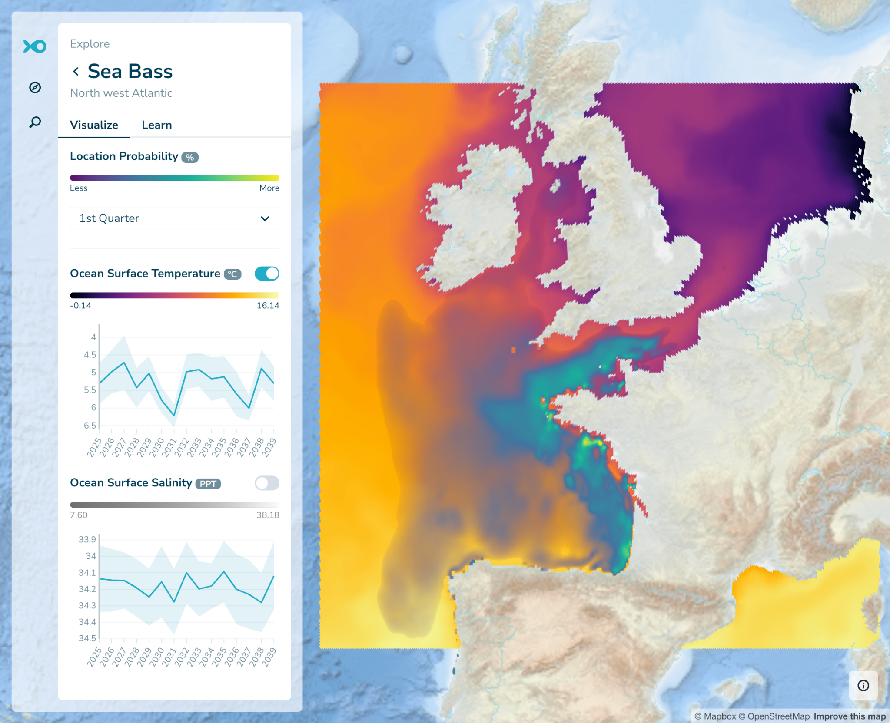

GFTS D5.2 Use Case Descriptor
Introduction
This document describes the Global Fish Tracking System (GFTS) use case for DestinE Platform. The subject area of the GFTS use case is in marine biology, the project is performing fish track reconstruction within biologging science and estimation of future fish habitat conditions based on sea temperature projections from the Climate Adaptation Digital Twin.
This document has been continuously updated as we progress in the use case development. Especially the sections around integration with DestinE Platform services and the use of DestinE Digital Twin data has evolved as we advanced in implementing the original plan in a collaborative co-creation approach.
Actors
There are three main actors in this use case. The three actors have complementary capabilities that has ensured a successful use case development. The three partners were responsible for the end-user perspective, infrastructure development, and interface implementation. The end-user of the system are researchers that perform fish track reconstruction science.
The end-user is represented by the Institut Français de Recherche pour l’Exploitation de la Mer (IFREMER). IFREMER is a consortium partner of the GFTS project. This institute is at the forefront of fish track research and has contributed to the definition of this use case from the proposal writing stage. They have used the GFTS as a platform for advancing their fish tracking modeling.
For infrastructure development and deployment the project has the Simula Research Laboratory (SRL) as a consortium partner. Simula is a research laboratory that performs high-quality information and communication technology research. It is the perfect partner for ensuring a highly scalable fish track reconstruction environment that IFREMER has relied on.
To create a decision support tool the project had Development Seed as a consortium partner. Development Seed is a pioneering technology company specializing in data visualization, mapping, and software development for social good, recognized for its innovative use of geospatial data to empower organizations and governments worldwide. Development Seed has also been the lead of the project.
Use Case Components
Our use case has two main components, one is a modeling environment for fish track reconstruction, and the other is a decision support tool to explore future habitat conditions for fish species based on the reconstructed tracks.
Fish track modeling environment
The modeling environment addresses a need from the scientific community to have a consistent way of running fish track reconstruction at scale. Currently, scientists that have biologging data from in situ measurements have to perform fish track reconstruction on their own local machines. Fish track reconstruction is a highly resource intensive process. It requires access to large datasets of sea temperature profiles along time and space, as well as a high number of computing power to run the models. This is a limitation for biologists who are specialized in marine biology and biologging from in-situ fish tagging. These scientists may not have the knowledge of creating and maintaining scalable computing environments for fish track reconstruction. Furthermore, the ocean temperature data used for fish track reconstruction is shared across different modeling efforts for different species. A modeling environment that combines data availability with computational resources will significantly lower the barriers for biologists to perform fish track reconstruction. This is a clear value added when compared to the current workflow that biologists use for fish track reconstruction.
Our use case has therefore added value by creating a ready to use environment for fish track reconstruction from biologging data. This environment has been be made available to scientists that are limited in their current workflow, reducing the barrier of entry for this kind of scientific analysis, and increasing the uptake of ocean temperature data created in the DestinE project and the DestinE Platform environment.
Preconditions
The first precondition for using the fish track modeling environment is familiarity with the pangeo-fish software and fish track reconstruction techniques. The model environment is a ready-to-use development environment, but the user is still expected to be an expert in fish track reconstruction. The environment relieves the burden of infrastructure management for users that know how to run models in notebooks.
A second precondition for using this system is the availability of biologging data. The system does not provide the biologging data itself. A user of the system has to provide this data and upload it to the system prior to start modeling.
A third precondition is availability of computing resources. The DestinE Platform provides the underlying infrastructure. The requirements on the size of the computing resources depend on the amount of biologging data that is available (how many species, how many observation points, for how many dates), as well as the resolution of the ocean temperature data used for reconstruction. Here the higher the better, each user can choose the best available data for the region where the biologing data was collected and the time range for which it is available.
Input summary
The inputs for this system are biologging data from fish species on the one hand, and ocean temperature on the other hand. The biologging data needs to be provided by the user, whereas the ocean temperature data is available through the DestinE Platform data lake. This is one of the key advantages of this system, that the big data requirements for this kind of modeling are readily available through the DestinE Platform.
Output summary
The outputs of the fish track modeling environment are the reconstructed fish tracks. These are georeferenced fish locations with dates attached to them, as well as daily posterior distributions of fish position. These represent daily maps of fish presence probability. These fish tracks and location probabilities are stored within the GFTS system and can be integrated into the decision support system in a later step. The presence probability can be aggregated over time intervals such as spawning periods and individual fishes to help managers designing spatial management measures.
Workflow description
The high level workflow for using this system is to register on the platform. To control the type and level of usage of the platform, users are able to join the GFTS Fish Track Reconstruction platform by invitation only in the current iteration. After invitation, registration, and login, the user can have access to a Jupyter environment that can scale on demand. The user can then upload their biologging data, perform modeling and store the output of the modeling in secure and long term cloud storage.
Future conditions decision support tool
Fish track reconstruction is a significant first step in better understanding fish populations in the oceans. However, the fish tracks themselves are not enough for decision makers to derive actionable insights for improving marine life protection and design fisheries policies.
The second part of the GFTS project is therefore to leverage the fish tracks and combine them with long term ocean temperature forecasts from the DestinE Climate Adaptation Digital Twins. The user can calculate the future conditions of these fish track locations by crossing the fish track locations with DestinE Climate Adaptation Digital Twin data. Ocean condition variables from the Climate Adaptation Digital Twin forecasts can be crossed with reconstructed fish tracks using the scalable DestinE Platform. Example variables for these calculations are sea temperature and salinity.
This integration enables the user to potentially evaluate a range of potential scenarios, depending on the available climate simulations in the DestinE Digital Twin. These different climate scenarios can depict how variations in climate conditions could impact the quality of habitat for fish species based on the estimated fish track locations.
Preconditions
The precondition for providing the decision support tool for any fish species, is its previous completion of fish track reconstruction in the modeling environment. Once fish tracks are available, the system can integrate them and create what-if scenarios based on long term climate projections.
Another precondition is the existence of detailed data from the different Climate Adaptation Digital twin models, ideally under different climate scenarios. These are required to compute the scenarios that analyze the future conditions that fish might meet in their current location.
Input summary
The input for the decision support system are the fish tracks, and future projections of ocean temperatures. With these two inputs, scenarios can be computed and made available to the user.
Output summary
The output of the decision support system are maps and graphs of future habitat conditions for the species at hand. The system exposes the data from the DestinE Climate Adaptation DT scenarios to the end user through an intuitive interface. Outputs are the graphical representation on the interface, as well as potentially options to export the underlying data.
Workflow description
The decision support system is available as an operational service on the DestinE platform. The workflow begins therefore with accessing the tool though the DestinE platform using a browser. The user can then explore individual fish tracks, fish track groups, and the future salinity and temperature as estimated by the Climate Adaptation DT.
Operationalisation
The decision support tool of the GFTS project is offered as an operational service through the DestinE platform. The service has been registered and made available to all DestinE platform users.
Streamlining data preparation
To connect the fish track modeling output to the decision support tool, the results must first be processed and prepared for sharing. This involves simplifying the individual fish tracking data and regrouping it into quarterly summaries. It optimally includes preparing the Climate Adaptation DT data by quarter and intersecting it with the fish track data. Once this is done, the data can be published to the decision support tool of GFTS. To initiate the publishing process, users are encouraged to contact the GFTS service maintainers—usually by opening an issue on the GitHub repository for the platform. Along with the data, users can also share relevant context, such as information about the tagging campaigns, which then appears under a “Learn” tab on the website where the results are displayed.
Behind the scenes, data reduction steps are required before publishing. This means running specific scripts that help organize, compress, and convert the raw tracking data into a standardized format suitable for the GFTS platform. These steps include filtering tag data, grouping it by quarter, and transforming the results into Parquet files—a format optimized for web-based visualization. After these files are ready, they are uploaded to cloud storage linked to the GFTS website. Although some coding is involved in this part, users only need to follow predefined steps, and the maintainers are available to help with publishing and ensuring the data is correctly displayed on the decision support tool.
Leveraging data in native HEALPix format
The fish track reconstruction algorithm in the pangeo fish software uses the HEALPix gridding system. HEALPix (Hierarchical Equal Area isoLatitude Pixelisation) is an algorithm for dividing a 2-sphere into equal-area pixels, based on subdividing a distorted rhombic dodecahedron and using a related class of map projections. This gridding system is commonly used in climate science including some versions of the DestinE Climate Digital Twin data.
Given the importance of this gridding system, we developed new ways of visualizing data in its native HEALPix format. Instead of re-gridding the data into the more common gridding systems in latitude and longitude, we developed a solution that can visualize data directly from its native HEALPix grid. The cells are rendered dynamically based on the HEALPix Cell ids stored in the parquet files of the data preparation scripts mentioned above. This allows not only for a visually striking rendering of the data, but also avoids distorting the data though the resampling that is necessary when converting data into latitude and longitude grids. This innovative visualization technique is a contribution to the whole ecosystem of modeling that relies on HEALPix data and can be re-used in other applications.

The figure above illustrates our visualization of the seasonal species distribution probability layer and seasonal DestinE Climate DT data rendered directly from the native HEALPix data format.
Application to Seabass and Pollock
To demonstrate the capabilities of the GFTS system, we have focused on Seabass and Pollock, species have been studied by our scientific team for decades. We will leverage an extensive fish track biologging dataset that IFREMER has collected from 2010 onwards. The dataset is for Seabass and Pollock along the French Atlantic coast. The combination of this dataset with the Climate Adaptation Digital Twin allowed us to develop a fully fledged usage of the GFTS infrastructure and demonstrate the functionality of the system.
Uncertainty
Our approach quantifies uncertainties using hidden Markov models to derive the posterior probability of the sequence of fish positions, from which by-products are derived as mean, maximum and most probable fish trajectories. Appropriate ocean temperature and pressure datasets together with biologging in-situ datasets were used to estimate fish habitats, along with sensitivity analysis for a range of outcomes. The developed interactive tools offer end-users the ability to generate probabilistic predictions and explore different scenarios. Sensitivity analysis identifies key uncertainties and their impact on decisions, while expert judgment complements limited data. Subsequently, policy-making prioritizes robust strategies to design fish conservation areas.
Architecture
The technical framework of this work has been based on the Pangeo ecosystem, which facilitates co-creation and solution development. An interactive and scalable Pangeo computing infrastructure has been deployed to provision the resources required for running the pangeo-fish model. We have connected all available and relevant ocean temperature and pressure datasets of DestinE using Pangeo techniques such as Intake, STAC and kerchunk. Then, in consultation with IFREMER’s Ocean Physics scientist, additional datasets from IFREMER such as OSI-SAF datasets, and Copernicus marine services have connected to the Pangeo DestinE Platform.
The following diagram shows an overview of what data is used as input, what data is being generated, and how this information feeds into the decision support tool.
Co-design
The co-creation process developed within the e-shape project has been adopted to ensure that all stakeholders are engaged and their needs are addressed. We have employed co-creation as a collaborative process where stakeholders and end-users actively engage in the creation of the GFTS platform. We have collaborated with the initial users of the platform to
Use the GFTS system and pangeo-fish software to run fish track reconstruction
Include their existing fish track data in the decision support tool
Explore versions of the decision support tool and get feedback on how to advance
To achieve this, we have set up online workshops and interviews with our initial test users. The goal of these activities has been for the test users to become familiar with the GFTS system and be able to use it for their own purposes.
In general, we have encouraged all participants to openly share ideas, and to joint decision-making to generate an innovative and tailored outcome for GFTS. By integrating diverse perspectives, knowledge, and experiences, our co-creation process has resulted in a solution that is relevant, usable, and sustainable.
Digital Twin data
Our use case has used the data from the Destination Earth Climate Change Adaptation Digital Twin. We have evaluated the use of multiple models that are run within the Climate DT and that are incorporating atmosphere, land, ocean and sea-ice components. For our system we rely on the ocean component. We have evaluated the the different available Climate DT simulations. We have analysed the available data layers for all the simulations the future simulations currently available on the Climate Change Adaptation Digital Twin. The table below shows the available simulations as of today.
Type of simulation Model
Future projection ICON
Future projection IFS-NEMO
Historical simulation ICON
Historical simulation IFS-NEMO
Storyline simulation past climate IFS-FESOM
Storyline simulation present climate IFS-FESOM
Storyline simulation future climate IFS-FESOM
Table showing the available Climate DT simulations, accessed at the ECMWF website on July 15, 2025.
Based on this analysis and the needs of the current implementation of our algorithms, we decided to leverage the IFS-NEMO model. It has all the variables we need and has long term simulations up to 2039.
More specifically, we have created quarterly averages from the DestinE Climate Adaptation DT, activity ScenarioMIP, experiment SSP3-7.0, model IFS-NEMO, 0001 operational portfolio and the following two variables:
263100, Time-mean sea surface practical salinity, avg_sos, g kg**-1
263101, Time-mean sea surface potential temperature, avg_tos, K
Additional data sources
In addition to DestinE data our use case also relied on other data sources that are essential for fish track reconstruction. The datasets used are described in the table below
Dataset name Description
Raw fish track data We use the sensor data collected in situ from fish. These sensors track temperature and depth in regular time intervals.
Acoustic tracking data The in situ devices placed in the fish also emit an acoustic signal that identifies each one. In the ocean there are acoustic sensors located in multiple places that can capture those acoustic signals. These point based location identifiers are used also during fish track reconstruction.
Ocean temperature and pressure We use ocean temperature and pressure fields from DestinE data lake and Copernicus Marine Services. These are the reference fields used to convert the fish track measurements in location estimates.
Sea surface temperature We use sea surface temperature from Eumetsat as an additional calibration factor for the fish track reconstruction reference fields.
Planning and Strategy
Scalability Plan
We will build a scalable infrastructure from day one. The pangeo deployment will be based on Kubernetes and have an auto-scaling feature that will add more capacity to the infrastructure on demand as usage increases. Our service will rely on the ability of the DestinE Platform to provide the necessary resources to our Kubernetes cluster. The processing we use for the Seabass species will be a great scale test, as it is one of the larger existing biologging datasets in the world.
Long Term Strategy
Our long term strategy is to create a decision support tool that supports decision making around fish stocks around the globe. We believe that this requires the ability to estimate and map fish locations, primarily focused on biologging data, but with the vision of extending to other sources that indicated potential fish habitat. This is why the GFTS system has two main components: the fish track reconstruction environment, and the decision support tool.
The fish track reconstruction itself is an expensive analysis and will require funding for data analysis on demand using a case by case basis. The fish track reconstruction environment is not freely accessible and we will only scale up for the resource intensive processes if there is funding for such additional analysis. When no processing is being performed, the environment will only require minimal resources.
The decision support tool will be kept online in the medium term. Also this system is expected to have low resource utilization. New data from additional analysis will only be integrated into the decision making tool when the fish track reconstruction mechanism is deployed for additional processing as described above.
Traceability
We are using ORCID IDs for all the work published under the GFTS project. We are also publishing the source code and the relevant documentation in the public DestinE_ESA_GFTS GitHub repository. The documentation will be integrated into the codebase and published in a rendered version in a separate url for documentation.
All the software developed within the project has been licensed through permissive open source licenses (such as Apache 2 OSI and MIT licensees) and has been made available in GitHub. All developments have been done in the GitHub repositories linked below. FAIR Research Objects (ROs) have been created where relevant using the RoHub, a Research Object Management platform in order to align with Open Science principles such as the practice of sharing inputs, outputs, models, software, workflows, brochures, training, and any other publication during the active phase of the project.
Link to public GitHub repositories:
https://github.com/destination-earth/DestinE_ESA_GFTS
https://github.com/developmentseed/gfts/
Link to documentation website: https://destination-earth.github.io/DestinE_ESA_GFTS/
No commercial software has been used in this project. All the technologies are based on the Jupyter and Pangeo ecosystem that are widely adopted standard-based technologies enabling interoperability of DestinE components with external systems and guaranteeing compliance with standards indicated in DestinE Platform.
Use case associations
There have not been any other use cases associated with the GFTS use case.
Use Case Notes
There are no additional use case notes for GFTS.
GANTT Chart
Task number, focus area, Responsible leaders WP1 WP2 WP3 WP4
Task 1: Daniel Wiesmann(DS)
Task 2: Technology, Benjamin Ragan-Kelley (SRL)
Task 2: Science, Tina Odaka (IFREMER);
Task 3: Tina Odaka (IFREMER)
Task 4: User experience, Mathieu Woillez (IFREMER);
Task 4: Technology, Daniel Wiesmann (DS)